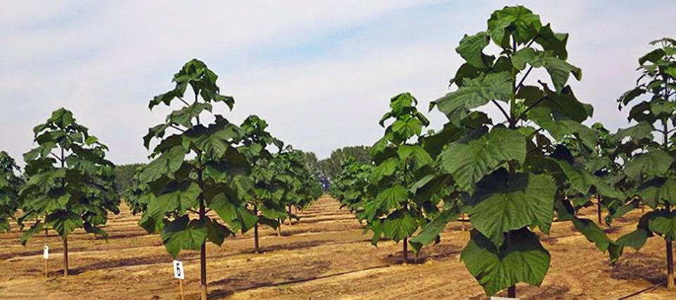
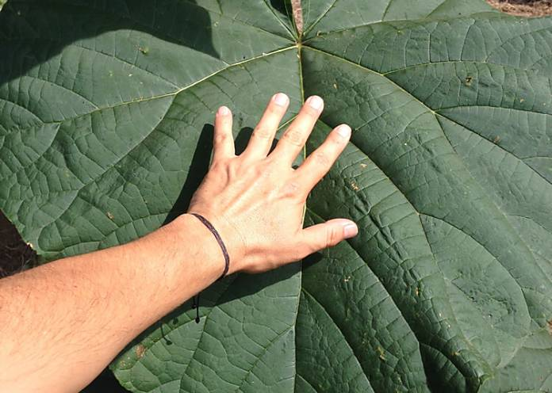
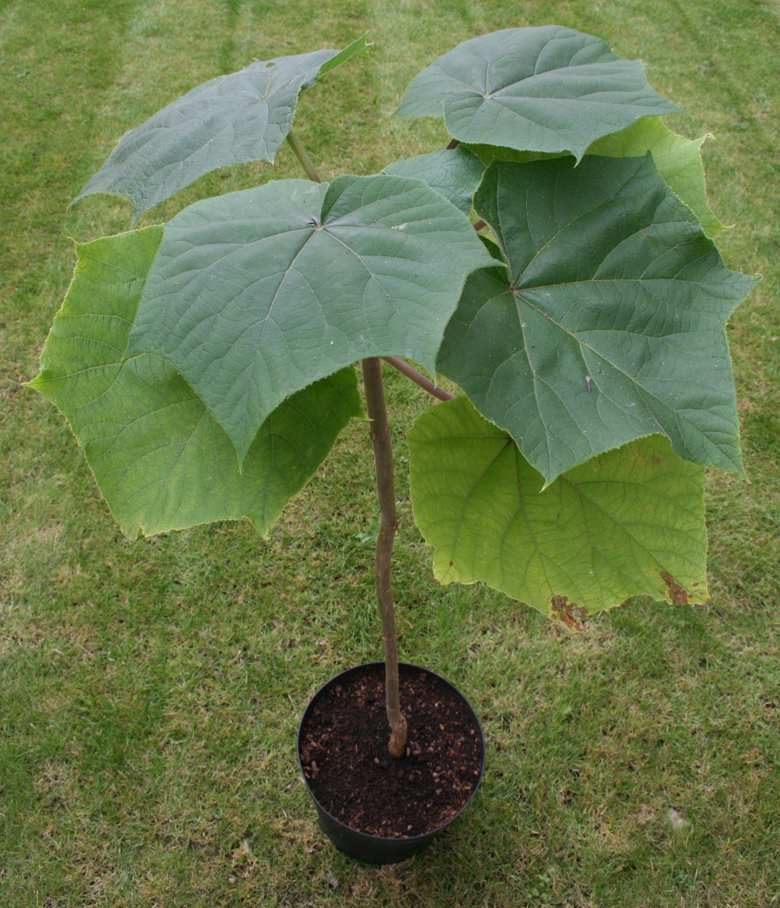

El Arbol de Paulownia
El árbol de la Paulownia, es originario de Asia, específicamente de los bosques templados de China y de Japón, conocidos por mucho como El árbol de Kiri, es multifuncional capaz de captar el 50% de las emisiones de gas carbónico, ofrece madera en apenas nueve años, nutre la corteza y da sombra evitando la pérdida de ganado por altas temperaturas.
Entre sus mágicos beneficios el Árbol de Paulownia ofrece,un rápido crecimiento, equilibrado y continuo, alta rentabilidad, ahorro en gastos ambientales, mejoramiento de los suelos y una de las más importantes características puede dotar de oxigeno al planeta muchos lo catalogan como el árbol que puede salvar al mundo.

Estos árboles pueden llegar a alcanzar los veinte metros de altura, sus hojas son de alta carga de nitrógeno, a su vez cuando estas hojas caen al suelo pueden aportar grandes nutrientes a la tierra y de esta manera permiten que crezcan otras plantas. Por sus grandes características fisiológicas este árbol se puede adaptar a varios tipos de climas, incluso con temperaturas extremas, la principal característica que lo diferencia del resto es la capacidad de hacer la fotosíntesis, este árbol puede consumir la cantidad más grande de CO2 y producir O2, debido a sus grandes hojas y particularidades metabólicas.

Este árbol contiene un aproximado de 22 kilogramos de O2 diario, supera la cifra de cualquier árbol corriente, tiene un rápido crecimiento logrando en dos meses tener la altura promedio de una persona normal. Puede adaptarse a suelos que están maltratados y de poco cultivo y este por sus propiedades de nitrógeno y oxígeno lo puede lograr.
Características Paulownia
